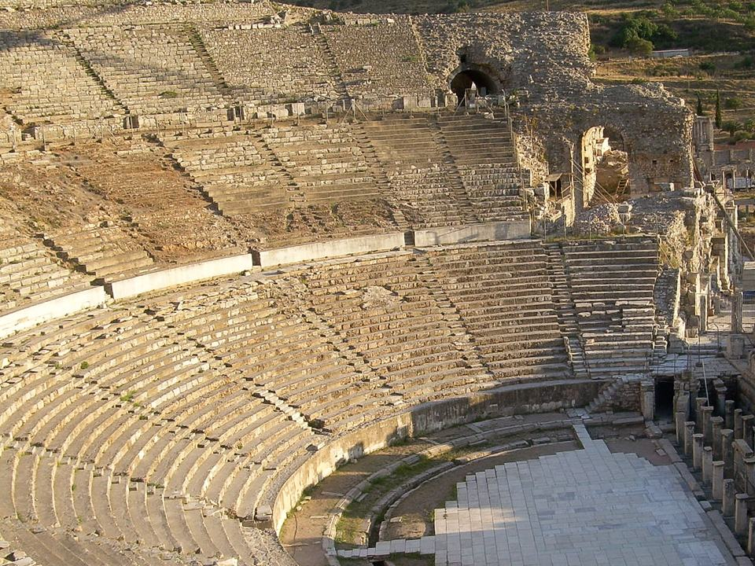

延伸研讀
查考古報告、遺址資料同古代文獻。
徒 19:1–7 記述了甚麼？
保羅在以弗所遇見約十二人。他們先前只受過約翰的洗，聽見保羅指向耶穌的教導後奉主耶穌的名受洗。保羅按手，聖靈臨到，他們說方言，也說預言。
閱讀徒 19 全章 ↗以下以列明的教會文件為依據。衛理宗欄引用美國聯合衛理公會文件，供研讀參考。

查考古報告、遺址資料同古代文獻。
保羅在以弗所遇見約十二人。他們先前只受過約翰的洗，聽見保羅指向耶穌的教導後奉主耶穌的名受洗。保羅按手，聖靈臨到，他們說方言，也說預言。
閱讀徒 19 全章 ↗以下以列明的教會文件為依據。衛理宗欄引用美國聯合衛理公會文件，供研讀參考。